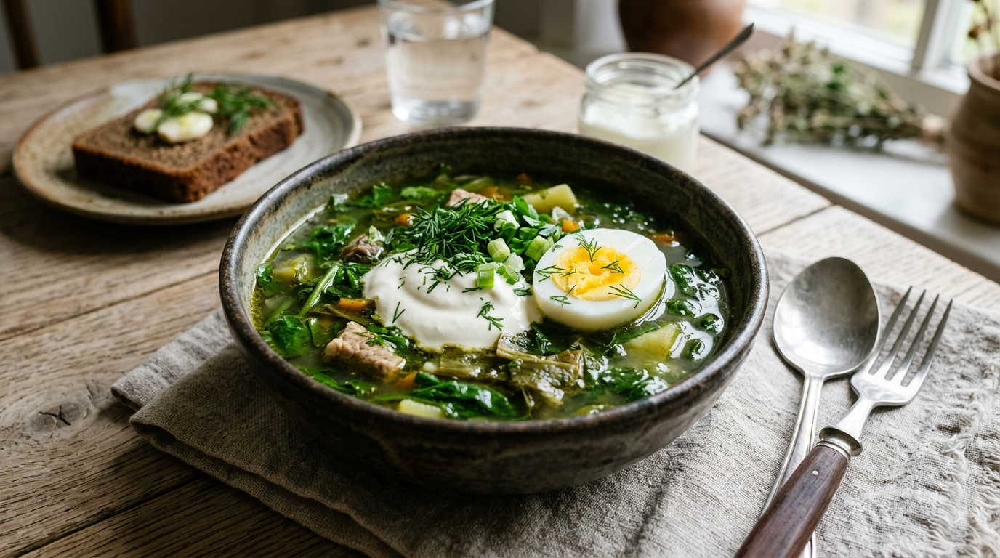
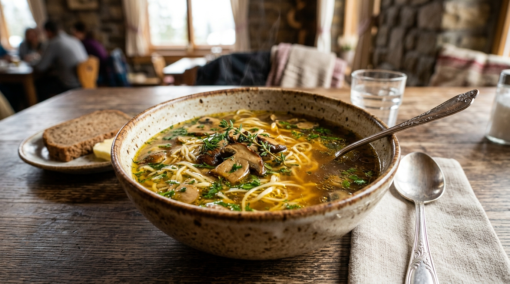

🍲 Борщі та перші страви

Борщ гетьманський
180 ₴Традиційний червоний борщ з печі з яловичиною, квасолею та свіжою зеленню.

Зелений борщ зі щавлем
165 ₴Легкий весняний борщ зі свіжого щавлю, перепелиним яйцем та фермерською сметаною.

Карпатська грибна юшка
190 ₴Ароматний суп із білих сушених грибів з домашньою яєчною локшиною.